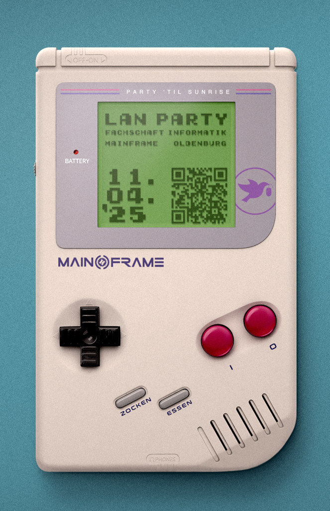

{% block content %}
{% filter markdown|typogrify -%}
Moin,
ein Weiteres Mal holen wir die alten Gaming Rigs aus der Mottenkiste und laden gemeinsam mit der Fachschaft Informatik der Uni Oldenburg zur Sommer LAN 2025 (aka ErstiLAN) ein.
Völlig egal ob am Anfang des Studiums oder schon im Masterabschluss, jeder ist Willkommen und wir freuen uns gemeinsam ein paar schöne Tage miteinander zu verbringen.
**Die wichtigsten Daten für euch:**
- 11.04.2025 - 18:00 - opening
- 13.04.2025 - 18:00 - closing
Ja... wir werden von Freitag auf Sonntag rund um die Uhr offen haben! ;)
Tragt euch bitte in unser Planungspad ein. Dies hilft uns besser die notwendigen Ressourcen abzuschätzen.
[https://pad.mainframe.io/p/LAN-Party-2025-04](https://pad.mainframe.io/p/LAN-Party-2025-04)
**Equipment was ihr mitbringen müsst:**
- Verlängerungskabel
- Mehrfachstecker mit min. so vielen Steckern wie ihre Geräte habt
- Euer Gaming Gerät der Wahl
- Monitore und Periphere wie Maus und Keyboard
- LAN Patchkabel mit ca. 3-5m
- Kopfhörer (keine aktive Boxen!)
- Gewünschte Spiele (idealerweise vorgeladen)
**Verpflegung**
Wir haben ein eigenes Kiosk / Shopsystem mit goodies wie:
- FritzCola
- Club/Mio Mate
- Wasser
- TK Pizza
- Schokolade
- Gummibärchen
- Chips etc.
Eigene Verzehrung kann sehr gerne mitgebracht werden. Wir haben weitere Küchenutensilien wie Mikrowelle, Ofen, Toaster oder Sandwichmaker.
Darüberhinaus gibt es eine Fritteuse!
Bitte davon absehen irgendwas mit Erdnuss mitzubringen. Wir haben Menschen mit Allergenen!
**Zusätzliche Unterhaltung:**
Valve Index VR Headset wird erneut unserer Lounge zur Verfügung stehen.
Abgesehen davon stehen natürlich die normalen Spielereien unseres Hackspace zur Verfügung
- Lasercutter
- 3D Drucker
- Rasterelektronenmikroskop
- Lötwerkstatt
**Parkplätze:**
An der Straße gibt es kostenlose Parkplätze in der Zeit von 19:00 Uhr bis 08:00 Uhr des Folgetages. Der Parkplatz in Richtung des Bahnhofs wird rund um die Uhr bewirtschaftet und ist nicht kostenlos.
Einen weiteren Parkplatz gibt es unter bzw. innerhalb des Gebäudes. Die ersten 30min sind kostenlos, danach ist es 1€/h. Max ist 5€/d, jedoch wissen wir nicht wann genau der neue Tage anfängt. Vielleicht 24h, vielleicht Mitternacht, wir wissen es nicht. In jedem Fall wird EC-Cash benötigt!
Spezifische Details zur Anfahrt gibt es [hier](https://www.mainframe.io/contact.html).
**Schlafen:**
Für kurzes Napping haben wir begrenzt Couches oder Sitzsäcke. Vollumfängliche Schlafplätze können wir nicht anbieten.

{%- endfilter %}
{% endblock content %}